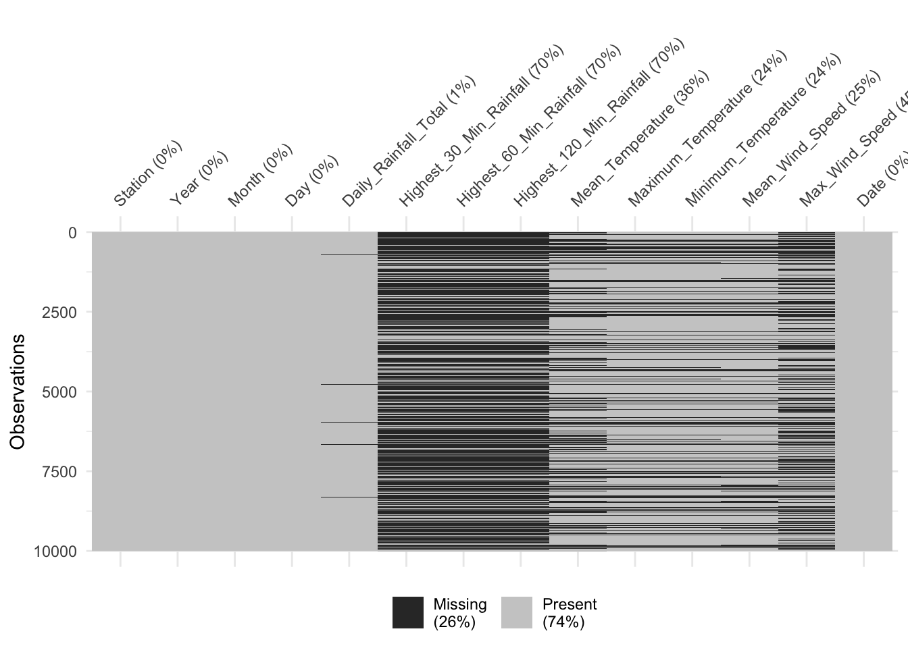
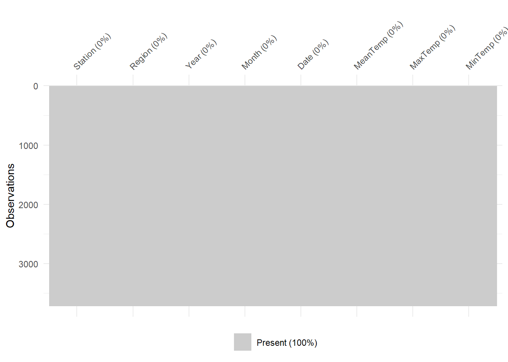
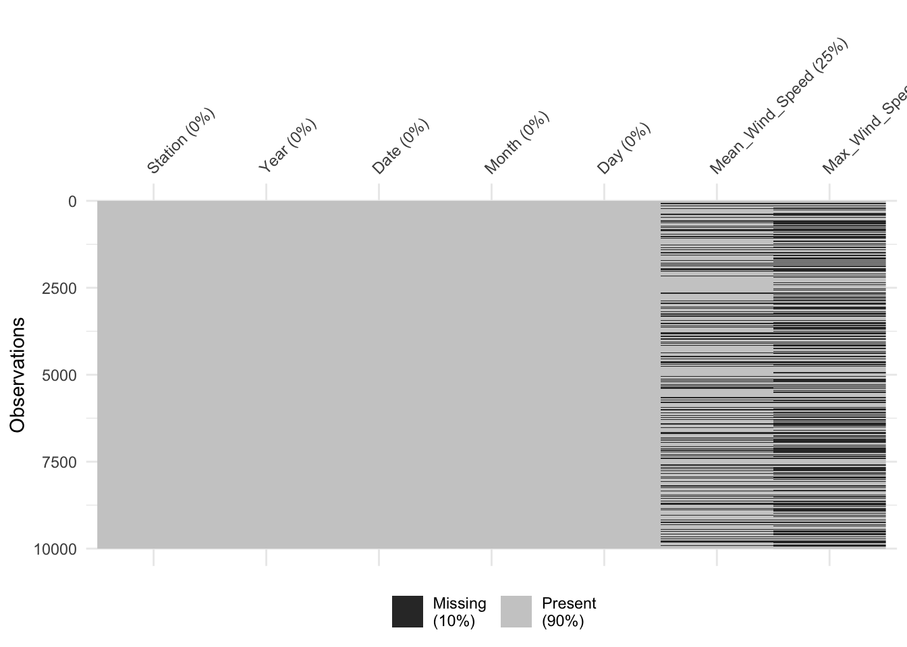

pacman::p_load(tidyverse, readr, psych, st, stars, tmap, lubridate, visdat, ggiraph, reshape, ggthemes, plotly)Data Preparation
1. Load Packages
2. Import Data
data_list <- list.files(path = "data/aspatial",
recursive = TRUE,
pattern = "\\.csv$",
full.names = TRUE)
list(data_list)[[1]]
[1] "data/aspatial/Admiralty.csv"
[2] "data/aspatial/Ang Mo Kio.csv"
[3] "data/aspatial/Boon Lay (East).csv"
[4] "data/aspatial/Changi.csv"
[5] "data/aspatial/Choa Chu Kang (South).csv"
[6] "data/aspatial/Clementi.csv"
[7] "data/aspatial/East Coast Parkway.csv"
[8] "data/aspatial/Jurong (West).csv"
[9] "data/aspatial/Khatib.csv"
[10] "data/aspatial/Marina Barrage.csv"
[11] "data/aspatial/Newton.csv"
[12] "data/aspatial/Pasir Panjang.csv"
[13] "data/aspatial/Paya Lebar.csv"
[14] "data/aspatial/Seletar.csv"
[15] "data/aspatial/Sembawang.csv"
[16] "data/aspatial/Tai Seng.csv"
[17] "data/aspatial/Tengah.csv"
[18] "data/aspatial/Tuas South.csv" weather <- read_csv(data_list)Rows: 168836 Columns: 13
── Column specification ────────────────────────────────────────────────────────
Delimiter: ","
chr (10): Station, Daily Rainfall Total, Highest 30 Min Rainfall, Highest 60...
dbl (3): Year, Month, Day
ℹ Use `spec()` to retrieve the full column specification for this data.
ℹ Specify the column types or set `show_col_types = FALSE` to quiet this message.weather <- weather %>%
rename_with(~ gsub(" ", "_", .x), everything())
glimpse(weather)Rows: 168,836
Columns: 13
$ Station <chr> "Admiralty", "Admiralty", "Admiralty", "Admir…
$ Year <dbl> 2009, 2009, 2009, 2009, 2009, 2009, 2009, 200…
$ Month <dbl> 1, 1, 1, 1, 1, 1, 1, 1, 1, 1, 1, 1, 1, 1, 1, …
$ Day <dbl> 1, 2, 3, 4, 5, 6, 7, 8, 9, 10, 11, 12, 13, 14…
$ Daily_Rainfall_Total <chr> NA, NA, NA, NA, NA, NA, NA, NA, NA, NA, NA, N…
$ Highest_30_Min_Rainfall <chr> NA, NA, NA, NA, NA, NA, NA, NA, NA, NA, NA, N…
$ Highest_60_Min_Rainfall <chr> NA, NA, NA, NA, NA, NA, NA, NA, NA, NA, NA, N…
$ Highest_120_Min_Rainfall <chr> NA, NA, NA, NA, NA, NA, NA, NA, NA, NA, NA, N…
$ Mean_Temperature <chr> NA, NA, NA, NA, NA, NA, NA, NA, NA, NA, NA, N…
$ Maximum_Temperature <chr> NA, NA, NA, NA, NA, NA, NA, NA, NA, NA, NA, N…
$ Minimum_Temperature <chr> NA, NA, NA, NA, NA, NA, NA, NA, NA, NA, NA, N…
$ Mean_Wind_Speed <chr> NA, NA, NA, NA, NA, NA, NA, NA, NA, NA, NA, N…
$ Max_Wind_Speed <chr> NA, NA, NA, NA, NA, NA, NA, NA, NA, NA, NA, N…3. Prepare Data
weather <- weather %>%
mutate(Station = as.factor(Station),
Date = make_date(year = Year, month = Month, day = Day),
Month = month(Date, label = TRUE),
Day = day(Date),
Daily_Rainfall_Total = as.numeric(Daily_Rainfall_Total),
Highest_30_Min_Rainfall = as.numeric(Highest_30_Min_Rainfall),
Highest_60_Min_Rainfall = as.numeric(Highest_60_Min_Rainfall),
Highest_120_Min_Rainfall = as.numeric(Highest_120_Min_Rainfall),
Mean_Temperature = as.numeric(Mean_Temperature),
Maximum_Temperature = as.numeric(Maximum_Temperature),
Minimum_Temperature = as.numeric(Minimum_Temperature),
Mean_Wind_Speed = as.numeric(Mean_Wind_Speed),
Max_Wind_Speed = as.numeric(Max_Wind_Speed))Warning: There were 9 warnings in `mutate()`.
The first warning was:
ℹ In argument: `Daily_Rainfall_Total = as.numeric(Daily_Rainfall_Total)`.
Caused by warning:
! NAs introduced by coercion
ℹ Run `dplyr::last_dplyr_warnings()` to see the 8 remaining warnings.glimpse(weather)Rows: 168,836
Columns: 14
$ Station <fct> Admiralty, Admiralty, Admiralty, Admiralty, A…
$ Year <dbl> 2009, 2009, 2009, 2009, 2009, 2009, 2009, 200…
$ Month <ord> Jan, Jan, Jan, Jan, Jan, Jan, Jan, Jan, Jan, …
$ Day <int> 1, 2, 3, 4, 5, 6, 7, 8, 9, 10, 11, 12, 13, 14…
$ Daily_Rainfall_Total <dbl> NA, NA, NA, NA, NA, NA, NA, NA, NA, NA, NA, N…
$ Highest_30_Min_Rainfall <dbl> NA, NA, NA, NA, NA, NA, NA, NA, NA, NA, NA, N…
$ Highest_60_Min_Rainfall <dbl> NA, NA, NA, NA, NA, NA, NA, NA, NA, NA, NA, N…
$ Highest_120_Min_Rainfall <dbl> NA, NA, NA, NA, NA, NA, NA, NA, NA, NA, NA, N…
$ Mean_Temperature <dbl> NA, NA, NA, NA, NA, NA, NA, NA, NA, NA, NA, N…
$ Maximum_Temperature <dbl> NA, NA, NA, NA, NA, NA, NA, NA, NA, NA, NA, N…
$ Minimum_Temperature <dbl> NA, NA, NA, NA, NA, NA, NA, NA, NA, NA, NA, N…
$ Mean_Wind_Speed <dbl> NA, NA, NA, NA, NA, NA, NA, NA, NA, NA, NA, N…
$ Max_Wind_Speed <dbl> NA, NA, NA, NA, NA, NA, NA, NA, NA, NA, NA, N…
$ Date <date> 2009-01-01, 2009-01-02, 2009-01-03, 2009-01-…weather %>%
sample_n(10000) %>%
vis_miss()
write_rds(weather, "data/weather.rds")4. Create Rainfall Dataset
rainfall <- weather %>%
select(Station, Date, Year, Month, Day, Daily_Rainfall_Total, Highest_30_Min_Rainfall, Highest_60_Min_Rainfall, Highest_120_Min_Rainfall)
glimpse(rainfall)Rows: 168,836
Columns: 9
$ Station <fct> Admiralty, Admiralty, Admiralty, Admiralty, A…
$ Date <date> 2009-01-01, 2009-01-02, 2009-01-03, 2009-01-…
$ Year <dbl> 2009, 2009, 2009, 2009, 2009, 2009, 2009, 200…
$ Month <ord> Jan, Jan, Jan, Jan, Jan, Jan, Jan, Jan, Jan, …
$ Day <int> 1, 2, 3, 4, 5, 6, 7, 8, 9, 10, 11, 12, 13, 14…
$ Daily_Rainfall_Total <dbl> NA, NA, NA, NA, NA, NA, NA, NA, NA, NA, NA, N…
$ Highest_30_Min_Rainfall <dbl> NA, NA, NA, NA, NA, NA, NA, NA, NA, NA, NA, N…
$ Highest_60_Min_Rainfall <dbl> NA, NA, NA, NA, NA, NA, NA, NA, NA, NA, NA, N…
$ Highest_120_Min_Rainfall <dbl> NA, NA, NA, NA, NA, NA, NA, NA, NA, NA, NA, N…write_rds(rainfall, "data/rainfall.rds")rainfall %>%
sample_n(10000) %>%
vis_miss()
5. Create Temperature Dataset
temp <- weather %>%
select(Station, Date, Year, Month, Day, Mean_Temperature, Maximum_Temperature, Minimum_Temperature)
glimpse(temp)Rows: 168,836
Columns: 8
$ Station <fct> Admiralty, Admiralty, Admiralty, Admiralty, Admira…
$ Date <date> 2009-01-01, 2009-01-02, 2009-01-03, 2009-01-04, 2…
$ Year <dbl> 2009, 2009, 2009, 2009, 2009, 2009, 2009, 2009, 20…
$ Month <ord> Jan, Jan, Jan, Jan, Jan, Jan, Jan, Jan, Jan, Jan, …
$ Day <int> 1, 2, 3, 4, 5, 6, 7, 8, 9, 10, 11, 12, 13, 14, 15,…
$ Mean_Temperature <dbl> NA, NA, NA, NA, NA, NA, NA, NA, NA, NA, NA, NA, NA…
$ Maximum_Temperature <dbl> NA, NA, NA, NA, NA, NA, NA, NA, NA, NA, NA, NA, NA…
$ Minimum_Temperature <dbl> NA, NA, NA, NA, NA, NA, NA, NA, NA, NA, NA, NA, NA…write_rds(temp, "data/temp.rds")temp %>%
sample_n(10000) %>%
vis_miss()6. Create Wind Dataset
wind <- weather %>%
select(Station, Year, Date, Month, Day, Mean_Wind_Speed, Max_Wind_Speed)
glimpse(wind)Rows: 168,836
Columns: 7
$ Station <fct> Admiralty, Admiralty, Admiralty, Admiralty, Admiralty,…
$ Year <dbl> 2009, 2009, 2009, 2009, 2009, 2009, 2009, 2009, 2009, …
$ Date <date> 2009-01-01, 2009-01-02, 2009-01-03, 2009-01-04, 2009-…
$ Month <ord> Jan, Jan, Jan, Jan, Jan, Jan, Jan, Jan, Jan, Jan, Jan,…
$ Day <int> 1, 2, 3, 4, 5, 6, 7, 8, 9, 10, 11, 12, 13, 14, 15, 16,…
$ Mean_Wind_Speed <dbl> NA, NA, NA, NA, NA, NA, NA, NA, NA, NA, NA, NA, NA, NA…
$ Max_Wind_Speed <dbl> NA, NA, NA, NA, NA, NA, NA, NA, NA, NA, NA, NA, NA, NA…write_rds(wind, "data/wind.rds")wind %>%
sample_n(10000) %>%
vis_miss()
7. Import Temp and Rainfall rds
rainfall <- readRDS("data/rainfall.rds")
temp <- readRDS("data/temp.rds")8. Prepare Data
8.1 Temperature
temp <- temp %>%
filter(!if_all(c(Mean_Temperature), is.na))
# filter(!if_all(c(Mean_Temperature, Maximum_Temperature, Minimum_Temperature), is.na))
glimpse(temp)Rows: 109,278
Columns: 8
$ Station <fct> Admiralty, Admiralty, Admiralty, Admiralty, Admira…
$ Date <date> 2009-01-24, 2009-01-25, 2009-01-26, 2009-01-28, 2…
$ Year <dbl> 2009, 2009, 2009, 2009, 2009, 2009, 2009, 2009, 20…
$ Month <ord> Jan, Jan, Jan, Jan, Jan, Jan, Jan, Feb, Feb, Feb, …
$ Day <int> 24, 25, 26, 28, 29, 30, 31, 1, 2, 3, 4, 5, 6, 7, 8…
$ Mean_Temperature <dbl> 26.8, 25.9, 25.9, 26.6, 26.3, 26.5, 26.4, 26.2, 26…
$ Maximum_Temperature <dbl> 31.4, 27.8, 29.6, 31.9, 30.0, 30.9, 29.9, 29.1, 31…
$ Minimum_Temperature <dbl> 24.4, 24.4, 23.7, 23.7, 23.9, 24.2, 24.8, 24.7, 23…temp_year <- temp %>%
drop_na() %>%
group_by(Station, Year) %>%
summarise(Avg_Mean = round(mean(Mean_Temperature), 1),
Avg_Max = round(mean(Maximum_Temperature), 1),
Avg_Min = round(mean(Minimum_Temperature), 1))`summarise()` has grouped output by 'Station'. You can override using the
`.groups` argument.glimpse(temp_year)Rows: 323
Columns: 5
Groups: Station [18]
$ Station <fct> Admiralty, Admiralty, Admiralty, Admiralty, Admiralty, Admira…
$ Year <dbl> 2009, 2010, 2011, 2012, 2013, 2014, 2015, 2016, 2017, 2018, 2…
$ Avg_Mean <dbl> 27.7, 27.7, 27.3, 27.4, 27.5, 27.5, 27.9, 28.1, 27.6, 27.6, 2…
$ Avg_Max <dbl> 31.8, 32.0, 31.3, 31.6, 31.6, 31.7, 32.0, 32.0, 31.7, 31.8, 3…
$ Avg_Min <dbl> 25.0, 24.9, 24.7, 24.7, 24.8, 24.8, 25.3, 25.4, 25.0, 24.9, 2…temp_month <- temp %>%
drop_na() %>%
group_by(Station, Year, Month) %>%
summarise(Avg_Mean = round(mean(Mean_Temperature), 1),
Avg_Max = round(mean(Maximum_Temperature), 1),
Avg_Min = round(mean(Minimum_Temperature), 1))`summarise()` has grouped output by 'Station', 'Year'. You can override using
the `.groups` argument.glimpse(temp_month)Rows: 3,715
Columns: 6
Groups: Station, Year [323]
$ Station <fct> Admiralty, Admiralty, Admiralty, Admiralty, Admiralty, Admira…
$ Year <dbl> 2009, 2009, 2009, 2009, 2009, 2009, 2009, 2009, 2009, 2009, 2…
$ Month <ord> Jan, Feb, Mar, Apr, May, Jun, Jul, Aug, Sep, Oct, Nov, Dec, J…
$ Avg_Mean <dbl> 26.3, 26.8, 26.9, 28.1, 28.5, 28.9, 28.1, 28.1, 28.3, 28.0, 2…
$ Avg_Max <dbl> 30.2, 31.4, 32.1, 32.2, 32.6, 32.9, 31.9, 31.8, 32.0, 32.1, 3…
$ Avg_Min <dbl> 24.2, 24.3, 24.0, 25.1, 25.1, 26.0, 25.2, 25.3, 25.5, 25.0, 2…Prepare temperature for time series analysis:
temp_month_melted <- melt(temp_month, id.vars = c("Year", "Month"), measure.vars = "Avg_Mean")
temp_month_melted$Month <- as.factor(temp_month_melted$Month)
temp_month_melted <- temp_month_melted %>%
rename(Avg_Mean_Temp = value)
glimpse(temp_month_melted)Rows: 3,715
Columns: 4
$ Year <dbl> 2009, 2009, 2009, 2009, 2009, 2009, 2009, 2009, 2009, 20…
$ Month <ord> Jan, Feb, Mar, Apr, May, Jun, Jul, Aug, Sep, Oct, Nov, D…
$ variable <fct> Avg_Mean, Avg_Mean, Avg_Mean, Avg_Mean, Avg_Mean, Avg_Me…
$ Avg_Mean_Temp <dbl> 26.3, 26.8, 26.9, 28.1, 28.5, 28.9, 28.1, 28.1, 28.3, 28…Prepare temperature for geospatial analysis:
temp_map <- temp %>%
group_by(Station, Year) %>%
summarise(Annual_Mean_Temperature = sum(Mean_Temperature, na.rm = TRUE),
Annual_Maximum_Temperature = sum(Maximum_Temperature, na.rm = TRUE),
Annual_Minimum_Temperature = sum(Minimum_Temperature, na.rm = TRUE)) %>%
ungroup()`summarise()` has grouped output by 'Station'. You can override using the
`.groups` argument.glimpse(temp_map)Rows: 323
Columns: 5
$ Station <fct> Admiralty, Admiralty, Admiralty, Admiralty,…
$ Year <dbl> 2009, 2010, 2011, 2012, 2013, 2014, 2015, 2…
$ Annual_Mean_Temperature <dbl> 9403.9, 9959.1, 9956.6, 10019.0, 10029.9, 8…
$ Annual_Maximum_Temperature <dbl> 10788.8, 11493.7, 11414.2, 11561.9, 11535.2…
$ Annual_Minimum_Temperature <dbl> 8463.6, 8950.9, 9013.2, 9047.4, 9042.6, 747…8.2 Rainfall
rainfall <- rainfall %>%
filter(!if_all(c(Daily_Rainfall_Total), is.na))
# filter(!if_all(c(Mean_Temperature, Maximum_Temperature, Minimum_Temperature), is.na))
glimpse(rainfall)Rows: 167,177
Columns: 9
$ Station <fct> Admiralty, Admiralty, Admiralty, Admiralty, A…
$ Date <date> 2009-01-22, 2009-01-23, 2009-01-24, 2009-01-…
$ Year <dbl> 2009, 2009, 2009, 2009, 2009, 2009, 2009, 200…
$ Month <ord> Jan, Jan, Jan, Jan, Jan, Jan, Jan, Jan, Jan, …
$ Day <int> 22, 23, 24, 25, 26, 27, 28, 29, 30, 31, 1, 2,…
$ Daily_Rainfall_Total <dbl> 0.0, 0.0, 0.0, 0.8, 0.0, 0.0, 0.0, 0.0, 0.0, …
$ Highest_30_Min_Rainfall <dbl> NA, NA, NA, NA, NA, NA, NA, NA, NA, NA, NA, N…
$ Highest_60_Min_Rainfall <dbl> NA, NA, NA, NA, NA, NA, NA, NA, NA, NA, NA, N…
$ Highest_120_Min_Rainfall <dbl> NA, NA, NA, NA, NA, NA, NA, NA, NA, NA, NA, N…Prepare rainfall for geospatial analysis:
rainfall_map <- rainfall %>%
group_by(Station, Year) %>%
summarise(Annual_Rainfall_Total = sum(Daily_Rainfall_Total, na.rm = TRUE),
Annual_Highest_30_Min_Rainfall = sum(Highest_30_Min_Rainfall, na.rm = TRUE),
Annual_Highest_60_Min_Rainfall = sum(Highest_60_Min_Rainfall, na.rm = TRUE),
Annual_Highest_120_Min_Rainfall = sum(Highest_120_Min_Rainfall, na.rm = TRUE)) %>%
ungroup()`summarise()` has grouped output by 'Station'. You can override using the
`.groups` argument.glimpse(rainfall_map)Rows: 469
Columns: 6
$ Station <fct> Admiralty, Admiralty, Admiralty, Admir…
$ Year <dbl> 2009, 2010, 2011, 2012, 2013, 2014, 20…
$ Annual_Rainfall_Total <dbl> 1736.6, 2980.8, 2871.8, 2916.8, 2559.8…
$ Annual_Highest_30_Min_Rainfall <dbl> 0.0, 0.0, 0.0, 0.0, 0.0, 1184.8, 1341.…
$ Annual_Highest_60_Min_Rainfall <dbl> 0.0, 0.0, 0.0, 0.0, 0.0, 1434.8, 1636.…
$ Annual_Highest_120_Min_Rainfall <dbl> 0.0, 0.0, 0.0, 0.0, 0.0, 1556.3, 1852.…